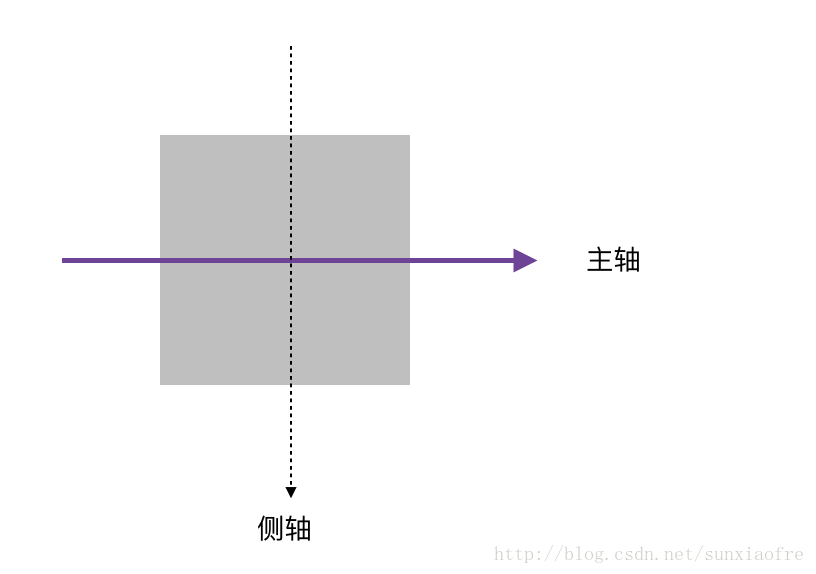

布局方法
- float
- position
- inline-block
- table
- flex
- grid
水平居中
- 行级元素：
text-align:center - 块级元素：
margin:auto
auto是根据盒子的宽度和两边剩余的宽度决定的,如果盒子的左右边的间距没设置，他会根据剩余间距的一半来对其盒子，使盒子居中
垂直居中
- 单行文字:
line-height - 行级盒子：
vertical-align:middle - 绝对定位：
top:50%;left:50%;
行级元素
1 | <p><em>共享</em>未安装人群</p> |
块级元素(已知宽高)
1 | div{ |
float-based(两栏布局)
1 | <main> |
float-based的缺点：后面的内容区域一定要BFC,aside和article的位置不能改变
updated（两栏布局）
1 | <main> |
（伪）等高
在
float布局的时候,我们通过padding-bottom和margin-bottom实现的,padding的效果是content的高度不变,但是把整个容器撑开了,但是margin如果是负值,他会把整个盒子的高度缩小。所以我们能看到背景颜色一直等高。其实就是padding撑开的。背景颜色实际就是padding。
1 | <main> |
position(两栏布局)
1 | <main> |
table
table会自适应
table-layout:fixed是按th的比例,来平均分配单元格的宽度的
1 | <table> |
注意:不要使用表格标签布局,用语义化标签
display:table(等高两栏布局)
1 | div{ |
table布局没有指定宽度,就是自适应的
1 | <main> |
导航条
1 | <nav> |
垂直居中
1 | <div><img src="https://p.pstatp.com/list/190x124/pgc-image/15290431498490a3c384181" alt=""></div> |
flexbox
真正为解决布局问题而生的规范
Flexbox可控制子元素：
- 水平或垂直排成一行
- 控制子元素对齐方式
- 控制子元素的宽度／高度
- 控制子元素的显示顺序
- 控制子元素是否折行
display:flex
- 将元素变为Flexbox
子元素在容器内水平（默认）或垂直摆放
flex-direction
- 子元素排列方向
- 取值：row（默认按行排列）| row-reverse | column | column-reverse
主轴与侧轴
主轴永远是
子元素流动、摆放的方向

flex-wrap 折行
- 元素在主轴方向摆放时，是否换行
- 取值：nowrap | wrap | wrap-reverse
justify-content 主轴方向摆放
- 子元素沿主轴方向的摆放
- 取值：flex-start | flex-end | center | space-between | space-around
align-items 侧轴方向摆放
- 在侧轴方向的对齐方式
- 取值：flex-start | flex-end | center | baseline | stretch
- 默认值：stretch
align-content
- 多行内容在容器内侧轴方向的对齐
- 取值：flex-start|flex-end|center|space-between|space-around|stretch
align-self
在某个子元素上设置对齐方式。
flex-grow 弹性
- 定义每一个子元素在盒子内的弹性
- 拓展盒子
剩余空间的能力 - 取值：数字,默认0
flex-shrink 收缩
- 元素收缩的能力
- 取值：数字，默认为1
- flex-shrink:0;不收缩
order
- 指定摆放时的顺序，从小到大
- 取值：数字，默认为0
flexbox 语法变化
1 | div { |